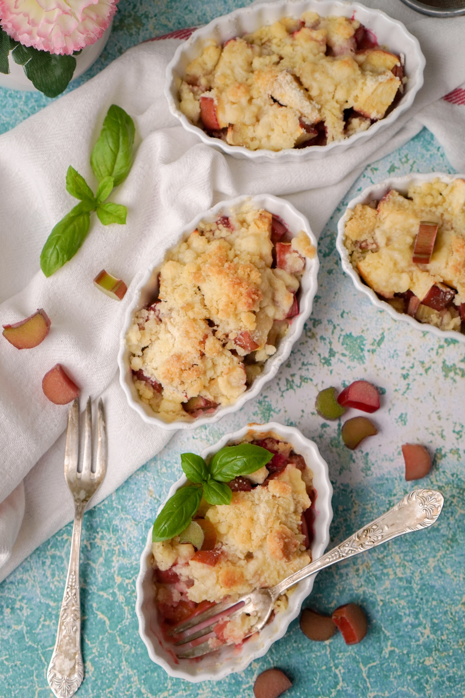

Rhubarb Crumble

Description
Indulge your taste buds in the comforting embrace of a classic Rhubarb Crumble, a dessert that seamlessly marries tartness and sweetness in every delectable bite.
This timeless treat transforms humble rhubarb into a symphony of flavors, as its vibrant pink stalks mingle with a golden, buttery crumble topping.
The juxtaposition of the slightly tangy rhubarb filling and the crisp, cinnamon-kissed crumbly crust creates a dessert that is both nostalgic and irresistibly satisfying.
Whether enjoyed warm with a dollop of vanilla ice cream or savored on its own, this Rhubarb Crumble is a celebration of simple ingredients that come together to create a dessert
that will undoubtedly become a cherished favorite in your culinary repertoire. Its delightful combination of flavors and textures makes it one of our favorite options for fika.
Ingredients
For the filling:
- Rhubarb: 500g
- Sugar: 200g
- Flour: 25g
- Vanilla extract: 5mL
- Salt:0.3g
For the crumble topping:
- Oats: 100g
- Flour: 120g
- Sugar: 100g
- Butter (cold sliced): 115g
- Cinnamon: 2.5mL
- Salt:0.3g
Steps
- Preheat the oven:
Preheat the oven to 200C. Grease a baking dish (20x20cm or a similar size) or use individual ramekins.
- Prepare the rhubarb:
Wash and chop the fresh rhubarb into 2.5cm pieces. Place the rhubarb in a large bowl.
- Add sugar and flavour:
In the bowl with rhubarb, add granulated sugar, all-purpose flour, vanilla extract, and a pinch of salt.
Toss the ingredients together until the rhubarb is well coated.
- Make the crumble topping:
In a separate bowl, combine rolled oats, all-purpose flour, brown sugar, cold diced butter, ground cinnamon,
and a pinch of salt. Use your fingers or a pastry cutter to mix until the mixture resembles coarse crumbs.
- Assemble the crumble:
Transfer the rhubarb mixture to the prepared baking dish or individual ramekins. Spread it out evenly.
Sprinkle the crumble topping evenly over the rhubarb.
- Bake:
Place the baking dish in the preheated oven and bake for 40-45 minutes, or until the rhubarb is bubbly, and the topping is golden brown.
- Cool and serve:
Allow the rhubarb crumble to cool for a few minutes before serving. It can be enjoyed on its own or with a scoop of vanilla
ice cream or a dollop of whipped cream.